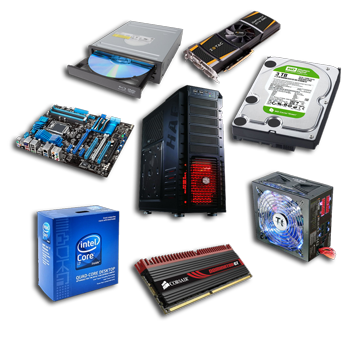

Комплектующие персонального компьютера

Персональный Компьютер (ПК), для большинства состоит из монитора, мышки и клавиатуры, процессора, видеокарты, но на самом деле компонентов (комплектующих) в компьютере больше, и основные компоненты находятся в корпусе, правильней его называть системный блок.
Системный блок состоит из:
- центрального процессора (CPU);
- материнской платы (Motherboard);
- оперативной памяти (RAM);
- видеокарты (GPU);
- запоминающего устройства (HDD/SSD);
- блока питания;
- корпуса.
Конечно это не все что может находиться в системном блоке, также устанавливаются множество других внутренних устройств:
- модемы, сетевые платы;
- FM-, TV-тюнеры;
- RAID контроллеры;
- звуковые карты;
- оптически привод (CD-ROM, DVD-ROM).
Это то, что может быть в системном блоке, кроме системного блока к частям компьютера относятся:
- мониторы;
- манипуляторы (сюда можно отнести, клавиатуры, мыши, джойстики, трекболы);
- принтеры, сканеры, факсы, МФУ;
- внешние устройства (удлинители USB, модемы, роутеры, усилители звука и т.д.);
- источники бесперебойного питания, фильтры и т.д.